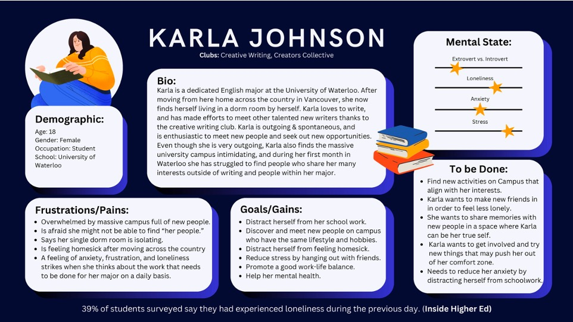
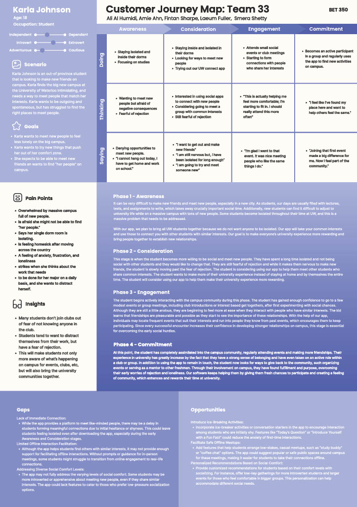
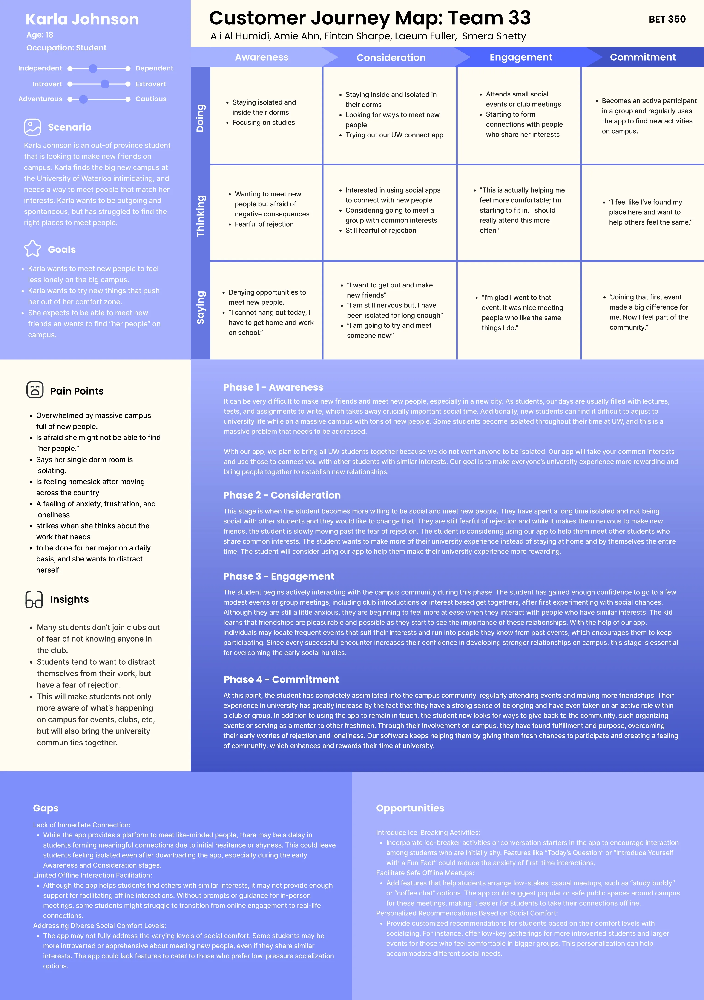
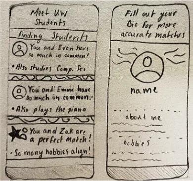

The Problem
39% of University of Waterloo students reported feeling lonely the previous day. Yet existing connection channels — Discord servers, Facebook groups, club listservs — were fragmented, overwhelming, and built for broadcast rather than belonging. Students who wanted to meet people didn't have a low-stakes, structured way to do it.
GooseConnect is a conceptual mobile platform designed to close that gap — making it easier for UW students to find people, discover events, and form real friendships beyond the classroom. Our team of 5 designed from research to final prototype over 6 weeks.
Project Assets




My Role
Team Facilitator & UX Designer
I led the research phase, facilitated all team ideation sessions, owned the journey mapping, and drove the Figma prototype from wireframes to high-fidelity. As facilitator, I was also responsible for keeping the team aligned on scope and making sure decisions were grounded in research rather than assumptions.
The Challenge
Designing for social anxiety is delicate — heavy-handed features (forced matching, public profiles, visible follower counts) can make the problem worse. Every design decision had to balance discoverability with safety, and initiative with low pressure. Getting that wrong could make a lonely student feel even more exposed.
Research & Discovery
We ran a mixed-methods research phase: a survey targeting UW students (n=40+), followed by 6 semi-structured interviews with students who identified as socially isolated or new to campus. I synthesised findings into a persona and a full customer journey map, which became the team's shared reference point throughout the design process.
The Core Tension
Students wanted connection but feared rejection. The biggest barrier wasn't finding events or people — it was the social risk of reaching out to someone who might not want to connect. Any platform that required students to be visibly "seeking friends" created the same anxiety it was supposed to solve. The design had to make initiation feel low-stakes — more like browsing than asking.
Pain points that shaped every design decision:
- Uncertainty about who was open to meeting — students didn't want to seem desperate by reaching out publicly
- Existing channels (Discord, Facebook groups) rewarded the already-connected; newcomers couldn't break in
- Anxiety about "putting yourself out there" — especially for international and introverted students navigating campus culture for the first time
- Event discovery was scattered across 6–8 different platforms, making it easy to miss relevant things entirely
- No mechanism for low-pressure interaction — students wanted a way to signal interest without sending a cold message
Iteration Process
I facilitated two structured sketching sessions where each team member independently explored the core flows (connect, discover events, start a conversation) before we compared and synthesised. This diverge-then-converge approach surfaced three competing visions for the platform's core mechanic:
Dating app model — swipe-based mutual matching. Efficient, familiar, but felt transactional and high-stakes. Test participants said it made friend-seeking feel "weird and forced."
Social feed model — see what everyone on campus is doing. Broad discovery but recreated the problem of existing platforms: dominated by existing social circles, invisible to newcomers.
Interest + event anchor — connect through shared activities rather than direct profile-to-profile matching. "We're both going to this event" is a lower-stakes common ground than "I want to be your friend."
From this we also iterated the conversation-starter feature across three versions — moving from open text (too much pressure), to AI-generated icebreakers (felt inauthentic), to interest-based prompts tied to the shared event (felt natural and contextual). This version tested best in feedback sessions.
Design Decisions
- Interest-based event anchoring — connections are initiated through shared event attendance, not direct profile browsing, reducing the social risk of reaching out
- Contextual icebreakers — conversation starters tied to the shared event ("You're both going to the Photography Club meetup — ask about their favourite shot") replace open text boxes that create blank-page anxiety
- Availability signals without exposure — users can signal "open to meeting people this week" without a visible public profile, giving control over when they're discoverable
- Card-based event feed with interest filtering — UW Goose visual identity, bold colour, and familiar card patterns reduce cognitive load for first-time users
- Granular privacy controls — visible in onboarding and accessible at any point, so students who want high visibility can have it and those who prefer low exposure aren't forced into discomfort
Impact & Next Steps
Prototype Outcomes
- Concept testing with 8 UW students showed strong preference for the event-anchor connection model over direct matching
- Interest-based icebreakers rated as "natural" or "helpful" by 7/8 participants vs. open text rated as "stressful" by 6/8
- All participants successfully completed the core flow (discover event → signal interest → initiate conversation) without assistance in prototype walkthroughs
- 6/8 participants said they would use the app if it were available on campus
What I'd Do Next
- Run moderated usability testing with a wider range of students, specifically recruiting international students and first-years who are highest-need
- Design and test the group meetup flow — individual matching works, but many students prefer finding a small group to join rather than one-on-one connection
- Explore integration with UW's official event calendar to reduce the burden of keeping content fresh on a new platform
- Define and prototype the onboarding trust moment — the point where users decide whether this app is safe is likely the highest-leverage screen in the flow